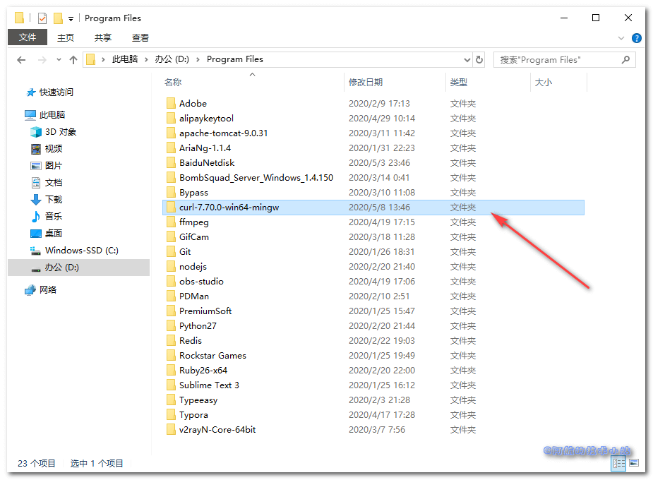
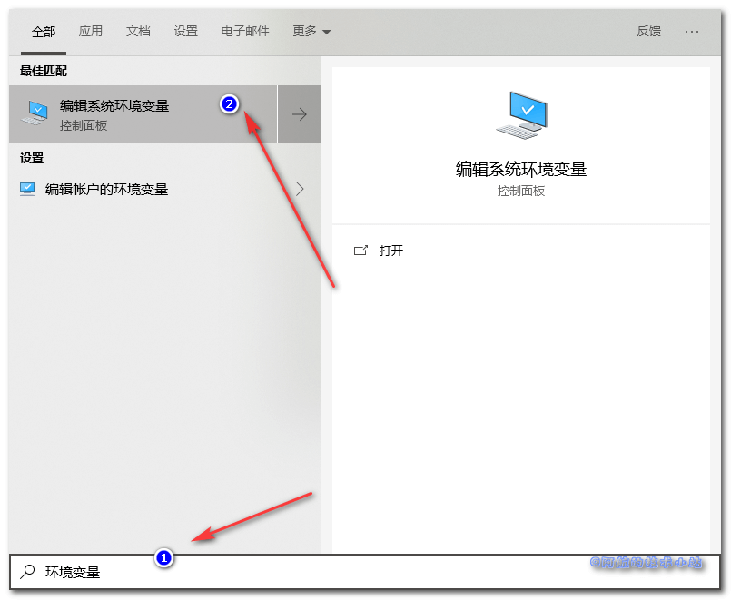
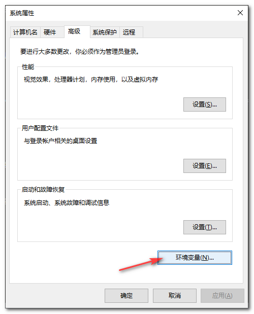
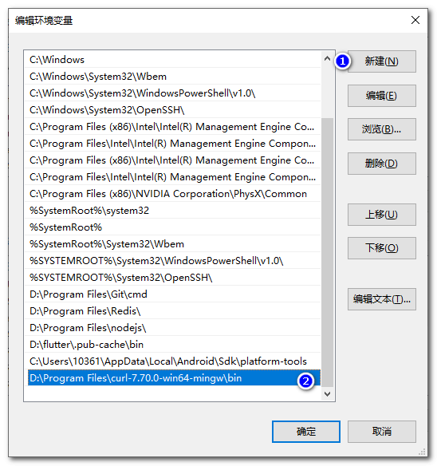
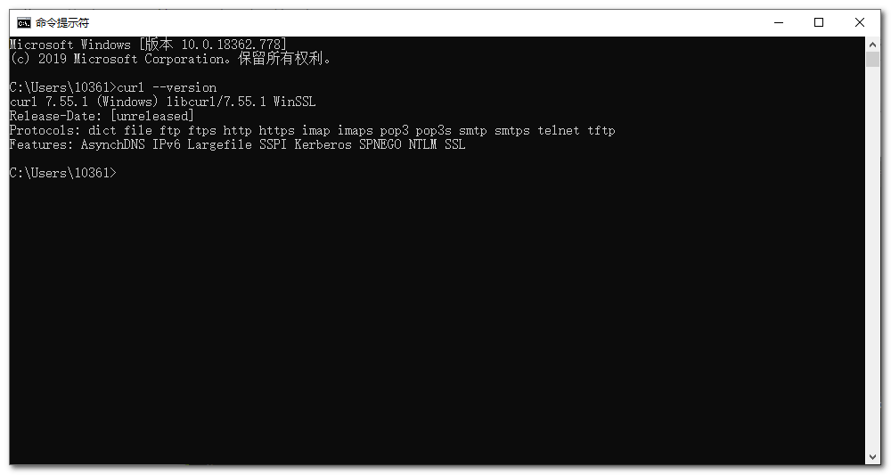

很多时候对接API, 接口提供方都会给出CURL格式的数据让我们进行访问、运行. 今天阿航看到百度站长平台(百度搜索资源平台)的主动推送有CURL方式. 但是发现自己的Windows上没有CURL的运行环境, 在此记录一下安装、部署CURL的过程.

需具备的条件
- 本篇教程针对于Windows系统用户, 阿航用的是Win10
- 你的电脑可以联网
- 电脑有了自己的压缩软件(比如WinRAR、 360压缩等)
下载 CURL
访问CURL官网
, 向下拉, 找到Windows的版本(汗, 在最下面. 这是多讨厌Windows…).
如图:

解压, 应该可以看到如下目录:

把压缩文件中的目录解压到某个地方(阿航放在了D:\Program Files\curl-7.70.0-win64-mingw下):

配置 Windows 环境变量
打开环境变量设置(点击开始, 直接输入关键字"环境变量"):

点击"环境变量"按钮:

选中"系统变量"的Path, 点击编辑:

新建一个环境变量, 值为解压目录\bin. 阿航这里为D:\Program Files\curl-7.70.0-win64-mingw\bin:

一路确定保存.
校验 CURL 是否安装成功
打开CMD, 输入:
curl --version
如果出现了版本信息, 证明安装成功:

感谢
- Pexels 上的 bongkarn thanyakij 拍摄的照片
结语
如果有任何问题, 欢迎在下方回复或者讨论.